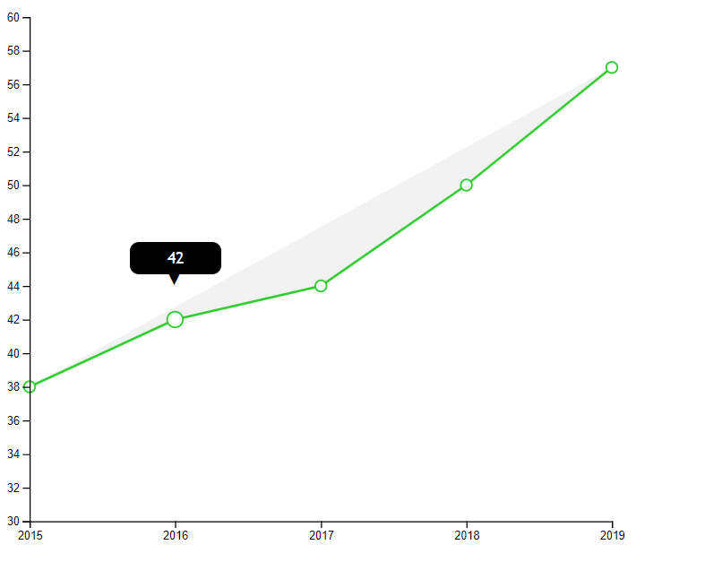

Apax is a web application that lets the user see multiple statistics determined by different criteria.
This is a guide of how to use this web application in terms of account managing, viewing statistics,
interacting and updating them.
Moreover, this guide includes the extra rights assigned to an administrator account.
2. Register
The first thing a new user has to do when entering the web application is to create a new account, also
known as registering.
This can be done very easily by providing an email and an eight-character long password. After doing
this, the account will be saved
as a normal user one and he/she will be redirected to the Login Page.
3. Login
If the user has already created an account, the only thing the user has to do is to type in the mail and
the password correspondent to, and
he/she will be redirected to the Home Page.
4. Home Page
This is the page where it all begins, presenting the web application with a pretty design, but its most
important element is the navigation bar.
To find out more about how to use it, go to the Navigation Bar section below.
5. Navigation Bar
The purpose of the navigation bar is to help the user explore the statistics easily.
Thus, there are two steps the user needs to pay attention to when making his/her choice, explained in
the following sections.
5.1. Choose Way of Visualisation
As seen in the navigation bar, there are 4 types of data visualisation:
Pie Chart - a type of graph in which a circle is divided into sectors that each represent a
proportion of the whole.
Bar Chart - a diagram in which the numerical values of variables are represented by the height
or length of lines or rectangles of equal width.
Line Chart - a diagram that displays the evolution of a numeric variable. Data points are
represented by a dot and connected by straight line segments.
Map Chart- a map divided into counties, coloured representatively depending on the values given.
Depending on how the user wants to see the information, he/she needs to pick one of the above.
It is worthy to mention the fact that the first 3 help visualising the same information - number of cars
per county and one other attribute of the cars found in the national fleet,
which can be brand,national category, or communitary category for the last 5 years.
Examples for each of them can be found below:
Bar ChartLine ChartPie Chart
However, map chart represents data for all counties in a certain year with the same car attributes as in
the previous three charts. So, if the user wants to see
more like a geographical information than a historical one, he/she can opt for this chart. Below there
is an example for the map chart:
Map Chart
5.2. Choose statistic
The second option the user needs to decide on is what type of statistic he/she wants to see. As
mentioned in the section above, bar chart, line chart, and pie chart
have the following statistics (for the last 5 years that appear in the National Fleet Website):
county and brand - number of cars in a certain county that are part of a brand
county and national category - number of cars in a certain county that are part of
a national category
county and communitary category- number of cars in a certain county that are part
of a communitary category
county - total number of cars in a certain county
On the other hand, the user can opt for a statistic from the following (from the map chart, for each
county of Romania):
year and brand - number of cars that are part of a brand in a certain year
year and national category - number of cars that are part of a national category in a certain
year
year and communitary category - number of cars that are part of a communitary category in a
certain year
Once the user chooses a statistic, too, the new page loads with a chart generated by the first values of
the two selectboxes. After this,
he/she can enjoy the interaction it provides.
6. Interaction with Statistics
What would a data visualisation be without interaction? That is why every chart has its own way of
interacting with the user, making it easier for him/her to see the data. An important action the user
should make is using the cursor to go over the elements found in the respective chart. This will cause
different actions, depending on the type of data visualisation:
The rectangles in the bar chart will change their colour
to a lighter shade and display the number of the cars respecting the two values selected in the
selectbox
(and the year that is abscissa value for the rectangle).
The circles of the line chart increase their radius, and a
tooltip
appears with the same information as for the bar chart.

The "slices" of the pie chart change their colour and, also,
the tooltip appears, containing the information about the number of cars, and the percentage out of
the
total
number of cars for the last 5 years.
The counties of the map chart change their colour when selected, and the tooltip appears containing
the name of the county and
the
number
of the cars found in that county that respect the second attribute selected by the user.
7. Update
If the user wants to change the statistic criteria he/she can modify the values of the selectboxes found
on the page.
Changing selectbox value.
After doing that, he/she can press the Submit button in order to generate the new chart. After doing
so, the update effect will take place,
being different for each of the charts:
Bar Chart - the bars go higher or lower, depending on the new values given. Moreover, the y axis
updates
itself with the correspondent numbers of cars
Line Chart - the line, together with the circles, go higher or lower. Also, the y axis updates
itself the
same way it does at bar chart
Pie Chart - the slices change their size, and, usually, their order changes too, from the biggest to
the
smallest
Map - the colour shades of the counties represent a higher or a lower number of cars, compared to
the
minnimum value. Update means changing the shades of the colour.
As expected, the tooltip for each of these data visualisations is also updated with the new correspondent
values.
8. Data Export
Another feature the user can enjoy is data exportation. Each of the charts presented can be exported
in 3 formats:
CSV - the data is written, containing the attributes selected in that specific view and their
values
SVG - it saves the whole chart or map as a 2D image using XML
WebP - an image format that compresses the original image data and represents it with a smaller
size
All the user has to do is to press one of the three buttons below the chart (one for each format) and
the file will
be downloaded.
Download Buttons.
9. Administrator
The functionalities mentioned above are avaialable for both normal users and the ones with administrator
privileges. However, there is
a thing needed to be added here: the normal user can only see the statistics that the administrator lets
him/her see. That is the feature
implemented for the administration module. Thus, the administrator disposes of a page with options to be
checked or unchecked, like in the following
image:
Once a statistic for a certain way of visualisation is unchecked by the administrator, it cannot be seen by
a normal user. The opposite is available, too:
once a statistic is checked, it can be seen by the user.